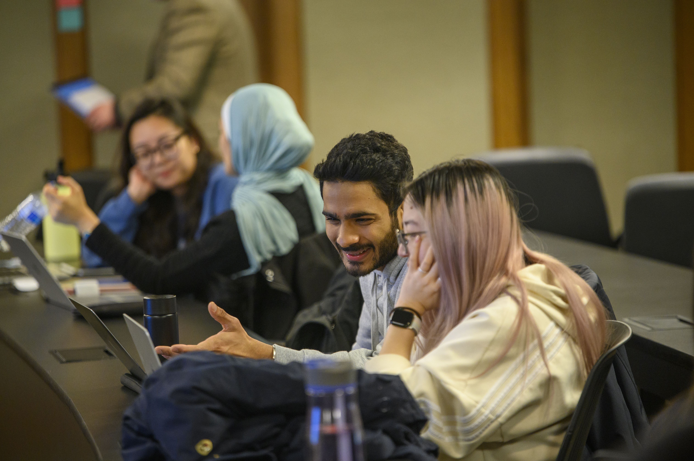
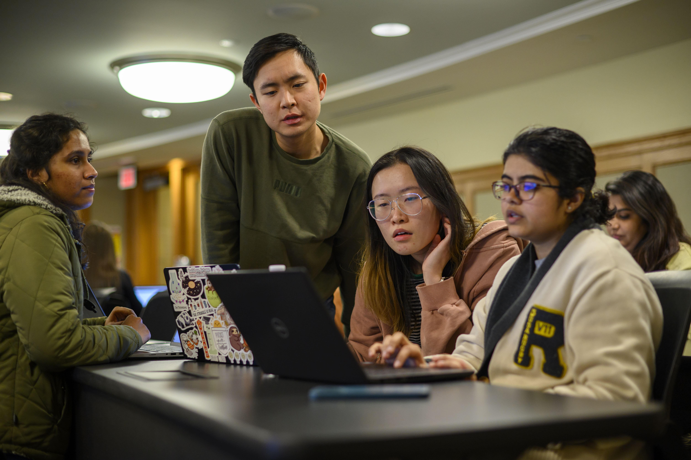

Overview

The University of Michigan School of Information (UMSI) is committed to providing students with resources to succeed academically and beyond. On this page, we will cover resources and suggestions to achieve academic success at UMSI.
The Academic Success Team
The UMSI Academic Success Team, as part of the Academic Programs & Student Life Team, works to holistically support students, both academically and personally. The Academic Success team oversees UMSI tutoring and academic skill-building programs, in addition to supporting students in navigating their time at UMSI.
Schedule a meeting with an Academic Success team member via Navigate360.
Members of the Academic Success Team
Shannon Gass
Assistant Director of Academic Success
Pronouns: She/Her/Hers
Support Focus Areas:
- Tutoring
- Academic Standing
- Academic Success Skills
- Student Concerns
- Academic Accommodations & Working with SSD
DeAndre Caldwell
Student Support Manager
Pronouns: He/Him/His
Support Focus Areas:
- Student Well-Being
- Emergency Funding Options
- Response to Care Report
- Connections to UM & Community Resources
Tutoring
In partnership with our UMSI faculty, the UMSI Peer Tutoring program is an opportunity for UMSI students and students taking UMSI courses to engage with peer tutors and receive assistance and support in UMSI courses.
For more information regarding student support and tutoring, please email umsi.academicsuccess@umich.edu
UMSI Programming Peer Tutoring
UMSI Programming Peer Tutoring Information Available for the below courses:
- SI 506 Programming I
- SI 507 Intermediate Programming
- General Python support
If you have questions regarding the Programming Peer Tutoring, you can email Professor Anthony Whyte at arwhyte@umich.edu and/or the UMSI Academic Success Team at umsi.academicsuccess@umich.edu for support.
UMSI Math Peer Tutoring
UMSI Math Peer Tutoring Information Available for the below subject areas:
- Linear algebra
- Statistics
- General Math support
If you have questions regarding Math Peer Tutoring, you can email the UMSI Academic Success Team at umsi.academicsuccess@umich.edu for support and/or if you are interested in applying to be a Math Peer Tutor.
Peer-to-Peer Student Tutor Directory
Academic Advising
Academic Advising is a process where students envision, execute, and reflect on their academic plans with guidance from a qualified UMSI Academic Advisor. Students share their goals, challenges, and questions with their academic advisor, and their academic advisor contributes knowledge of university and program requirements, policies, and processes. Together, the two parties develop an academic plan that aligns with the student's personal and professional goals.
How can academic advising help you?
- Creating an individualized academic plan
- Interpreting an academic policy or procedure
- Discussing concerns about a particular course
- Connecting with student support resources and services
- Navigating a disruption to your UMSI experience
Contact
MSI Students
- Schedule a 1:1 advising appointment
- Drop-in advising
- Email Address: umsi.advising.msi@umich.edu
MHI Students
- Schedule a 1:1 advising appointment
- Drop-in advising
- Email Address: umsi.advising.mhi@umich.edu
MADS Students
- Schedule a 1:1 advising appointment
- Email Address: umsi.advising.mads@umich.edu
Additional Academic Resources
Sweetland Writing Center: The Sweetland Center for Writing supports student writing at all levels and in all forms and modes. Sweetland offers one-to-one tutoring for undergraduate and graduate students in our faculty-led Writing Workshop and undergraduate Peer Writing Center, and teaches writing courses from the undergraduate to the graduate level. Sweetland also provides support for all multilingual and international undergraduate students.
English Language Institute: ELI exclusively serves members of the University of Michigan community with English for Academic Purposes courses and resources, GSI preparation, and TESOL courses that prepare students to teach English as a second or foreign language.
Math Lab: The Math Lab provides free tutoring for mathematics courses numbered through 217. Though help is not regularly available for other courses, we will attempt to answer the questions of any U-M student who comes to us for mathematics help.
Services for Students with Disabilities: Services for Students with Disabilities (SSD) recognizes disability as an integral part of diversity and is committed to creating an inclusive and equitable educational environment for disabled students.